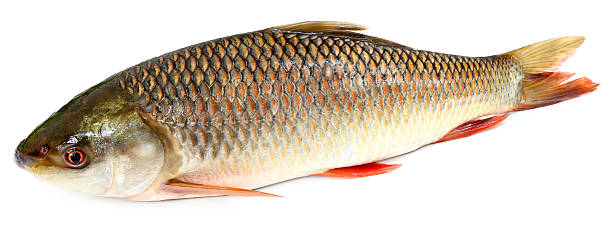
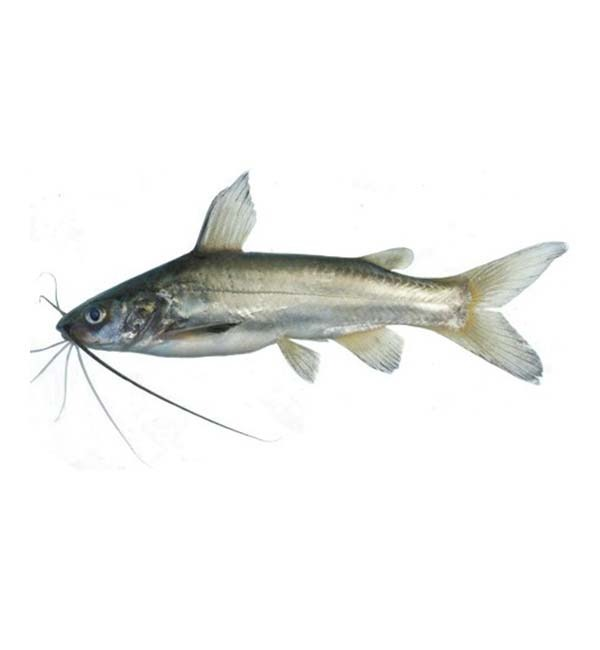

দ্রুত বর্ধনশিল তিলাপিয়ার প্রজাতি

উন্নত ভ্যারাইটিজ কার্প

দাস ফিশারিজ বাংলাদেশের প্রথম বৈজ্ঞানিকভাবে মাছের বীজ, পোনা ও ব্রুড উৎপাদনকারী প্রতিষ্ঠান হলো দাস ফিশারিজ। প্রতিষ্ঠানটি সারা দেশে উচ্চ গুণগত মানসম্পন্ন তিলাপিয়া, কার্প, ক্যাটফিশ এবং চিংড়ির পোনা সরবরাহ করছে। দাস ফিশারিজ খামারীদের জন্য সার্বক্ষণিকভাবে ফিশারিজ ডাক্তারদের মাধ্যমে পরামর্শ ও সহায়তা নিশ্চিত করছে, যা লাখো খামারীর জন্য ভরসার এক গুরুত্বপূর্ণ উৎসে পরিণত হয়েছে।
We care environment, Bio Security, water quality & nutrition
In 2006, we secured the best Fish Farmer in India award. In 2002 we secured the Fisheries Technocrats Forum award for the outstanding contribution in Fisheries
Quality is not an accident, it is the result of planning, team work & commitment to excellence.
Success in Aquaculture depends on Technology, Management, Team work & attitude.
6 Parent stock centres and 16 hatcheries
22 Fish seed variants with 4 major categories of fish seed
Fish seed supply to 5,000-7,000 farmers a year
64 district coverage through 98 sales points
We develop high-performance, interactive & scalable mobile apps across all scales, sizes & ecosystems - just the way your brand needs. Let's build your next big project!
Sometimes you need an extra hand to get your project off the ground. That's where we come in. We provide on-demand, skilled developers ready to upgrade your team now.
What sort of tech team do you need? Who should be your co-founders? How will you approach the terrifying place called the market? We answer all these and more.
We help you advertise your SaaS product, acquire and retain customers, and can help you increase ROI, estimate CAC, LTV and other important SaaS metrics.